온 가족이 함께하는 가을 계절밥상 레시피를 보고 추천해주세요~ 추첨을 통해 111분께 경품의 행운을 드립니다~!
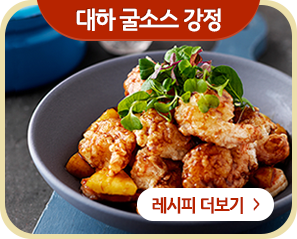
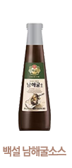
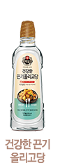
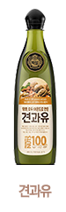
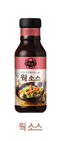
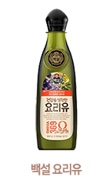
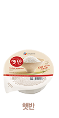
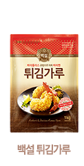
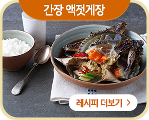
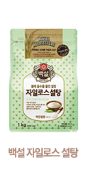
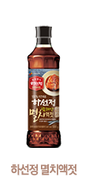
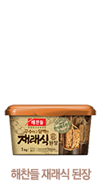
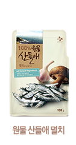
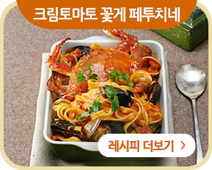
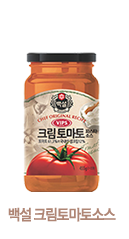
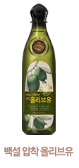
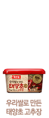
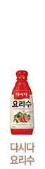
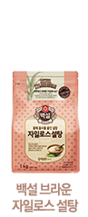
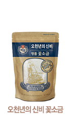
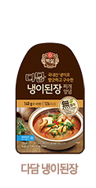
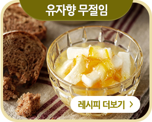
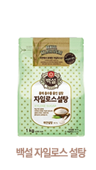
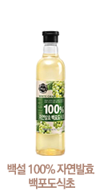
나만의 맞춤 레시피 앱! CJ THE KITCHEN
사랑하는 가족을 위한, 레시피 정보를 스크랩 해주세요! 나만의 맞춤 레시피 추천~! 스마트폰을 통해 CJ THE KITCHEN과 함께 해보세요.
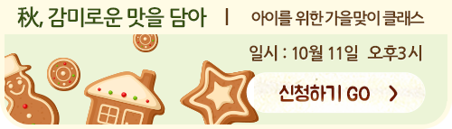
우리가족을 위한 CJ제일제당과 함께하는 가을 계절밥상 레시피 중 가장 맛있어 보이는 레시피를 하단 댓글로 남겨주세요. 추첨을 통해 111분께 경품의 행운을 드립니다~!
1번
CJ제일제당 해당 레시피에 댓글을 남기면 당첨 확률 UP!!
2번
나의 SNS에 이벤트 내용 공유하고, 선택정보란에 URL 남기면 당첨 확률 UP!
제세공과금 22%는 당첨자 본인 부담이며, 경품은 내부사정에 의해 일부 변경될 수 있습니다.